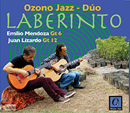
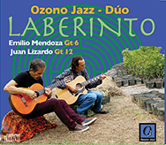

ozonojazz.com +58 424 257 3245 ozonojazz@gmail.com
~Música Ecológica de Venezuela~
 ¡Nuevo CD!
¡Nuevo CD!|
|
|
|
|
|
|
|
|
• Listas de los videos de Ozono en YouTube
• Para escuchar cada CD vía distrokid.com – hacer clic en la portada.
• Para lista audio de YouTube – hacer clic en su nombre.
• Para información sobre el CD - hacer clic en INFO CD.
• Para comprar el CD en físico - Mercadolibre o al correo.
 



1. Ruido vs "Silencio"
Música como Basura
Llevamos a cabo activismo ecológico a través de nuestra música para proteger el Sonido de la Tierra. Nos concentramos en lograr la reducción de la contaminación sónica o ruido humano en el planeta Tierra y, especialmente, la "contaminación musical". Realizamos donaciones así como promoción a organizaciones que ayudan al cuidado del ambiente. En el último CD Guarapiche Blues se incluyen tres piezas sobre el silencio.
2. Tragedias Negras
Derrame en el Río Guarapiche
Denunciamos las “tragedias negras” de la industria petrolera ya que tenemos un país hermoso que estamos destruyendo. Somos uno de los más grandes productores de petróleo y hemos colaborado con la contaminación del globo por más de cien años, causando además terribles accidentes ecológicos. Ahora lo repetimos con la minería del oro. Como venezolanos, le debemos al mundo y en especial a nuestro bello país, todos nuestros esfuerzos por cuidar el ambiente y a sus seres. Enfocamos el último CD en la tragedia del derrame de petróleo sobre el Río Guarapiche, como homenaje a María Rivas y su bella voz.
~~~~~~~~~~~~~~~~~~~~~~~~~~~~~~~~~~~~~~CAMPAÑAS POR EL SONIDO DE LA TIERRA:
1. ¡PLAYAS SIN BULLA!
Para disminuir la "contaminación musical" en las playas venezolanas:
Venezuela tiene sus playas sucias de ruido: Ir a las playas en este país es una tortura sonora. ¡Insoportable! En el 2012, nos declaramos activistas ecológicos contra el ruido y promulgamos la campaña ¡Playas sin Bulla! para que no se escuche música amplificada en las playas del país y menos, varias músicas amplificadas al mismo tiempo.
2. ¡OIGAMOS EL SILENCIO!
Lograr la enmienda de la Constitución Nacional para resguardar el Sonido de la Tierra o "ensona" (entorno sonoro natural). Ozono Jazz se enfoca desde el 27 de abril, 2016, Día Mundial del Ruido, en fomentar el cuidado y preservación del ensona como meta nacional y mundial:
Se ha entregado la Carta de Solicitud y los "Considerandos" al Presidente de la Comisión de Ambiente, Diputado Gregorio Graterol Roque, los días 11-10-2018, 27-03-2019, 24-04-2019. El 03-04-2019 se le entregó en sus manos en el Hemiciclo Protocolar, Asamblea Nacional, Caracas, en sesión plenaria. El día 07-08-2019 Emilio asistió a la Comisión Permanente de Ambiente, AN, con derecho de palabra en plenaria donde se entregó formalmente la solicitud de enmienda. Desde entonces, se han realizado varias visitas a la Comisión solicitando el resultado por escrito de la solicitud, sin respuesta hasta ahora.


{kind=link}